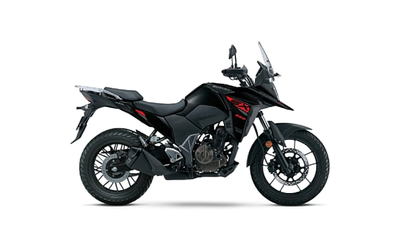

Introducing the All-New Gixxer SF 250/ Gixxer 250. From the makers of Hayabusa and GSX-R, comes the latest from a lineage of legends.

V-STROM SX
Exploring isn’t bound by the calendar. Because every time the clock ticks, it’s an opportunity to explore. And the V-STROM SX is designed for every such journey.
GIXXER SF
The next generation GIXXER SF retains its highly applauded sportiness and now comes equipped with Ride Connect Technology.
TVS
RADEON
The Radeon is answer to the Hero Splendor. It offers quite a few features in an effort to deliver more value to the front disc is offered dual-tone version.
STAR CITY PLUS
The Star City Plus is part of Motor Company’s commuter line-up. It has been introduced in two variants including mono tone and dual tone,apart from the revised engine.
SPORTS
The Sport is a commuter motorcycle for customers looking for a light-weight ride with a frugal engine and an affordable price tag.
HONDA
SP 160
The SP160 features modern styling that comprises a sharp-looking headlight, tank with shrouds, step-up saddle.
UNICORN
The Unicorn is a premium commuter motorcycle that is known for its fuel engine and comfortable riding experience.
SP 125
The SP 125 is a premium commuter and one of the highest-selling bikes in its segment.